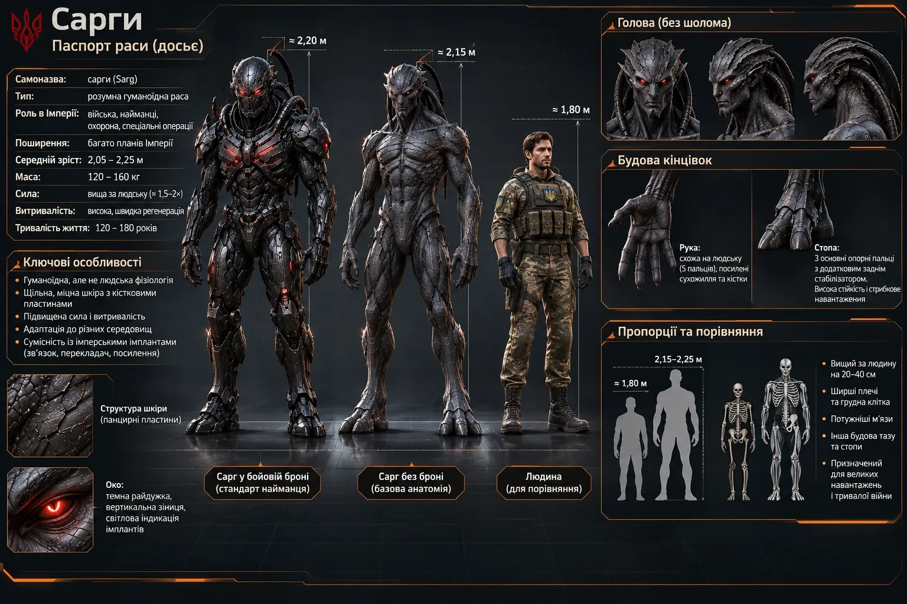

Ключові особливості
Гуманоїдна, але не людська фізіологія; щільна шкіра з кістковими пластинами; підвищена сила й витривалість; адаптація до різних середовищ.
ПАСПОРТ РАСИ
Сарги (Sarg) — розумна гуманоїдна раса, поширена на багатьох Планах Імперії. Її представники служать у війську, працюють найманцями, охоронцями та фахівцями спеціальних операцій. До саргів належить Кеор.

| Самоназва | сарги (Sarg) |
|---|---|
| Тип | Розумна гуманоїдна раса |
| Поширення | Багато Планів Імперії |
| Середній зріст | 2,05–2,25 м |
| Маса | 120–160 кг |
| Сила | Вища за людську приблизно у 1,5–2 рази |
| Витривалість | Висока; швидка регенерація |
| Тривалість життя | 120–180 років |
Сарги мають щільну, міцну шкіру з виразними кістковими пластинами. Їхня поверхня нагадує природний панцир: окремі пластини перекривають одна одну й утворюють захисний шар, особливо помітний на голові, плечах, грудях і кінцівках. Це не обладунок, а частина їхньої анатомії.
Голова сарга виразно не людська. Череп видовжений і вкритий рельєфними кістковими пластинами; над очима та вздовж верхньої частини голови виступають загострені гребені. Очі мають темну райдужку, вертикальну зіницю та червоне світіння, пов'язане з біологічною індикацією й імперськими імплантами.
Попри чужу будову голови, кінцівки зберігають гуманоїдну схему. Руки мають п'ять пальців, але вони міцніші за людські, з потовщеними суглобами та щільними нігтьовими пластинами. Стопа має три основні опорні пальці й додатковий задній стабілізатор. Така будова забезпечує стійкість під час бігу, стрибків і перенесення значного навантаження.
Без броні сарг приблизно на 20–40 сантиметрів вищий за людину середнього зросту. Він має ширші плечі й грудну клітку, потужнішу мускулатуру та іншу будову тазу й стопи. У бойовій броні його силует стає масивнішим, але пропорції залишаються впізнаваними: це та сама істота, а не людина в костюмі.
Гуманоїдна, але не людська фізіологія; щільна шкіра з кістковими пластинами; підвищена сила й витривалість; адаптація до різних середовищ.
Сумісність із системами зв'язку, перекладу та посилення. Імпланти є частиною імперського оснащення, а не природною анатомічною ознакою раси.
У межах Імперії сарги виконують військові та охоронні завдання, служать у спеціальних підрозділах і працюють найманцями. Їхня фізична витривалість і здатність діяти в різних середовищах роблять їх придатними для тривалих операцій далеко від рідного Плану.
Кеор — представник цієї раси. Його досвід найманця, ставлення до завершеної місії та байдужість до політичних причин конфлікту відповідають професійному середовищу, в якому він діє. Водночас його особисті рішення не обов'язково відображають погляди всіх саргів.
← До розділу «Раси»